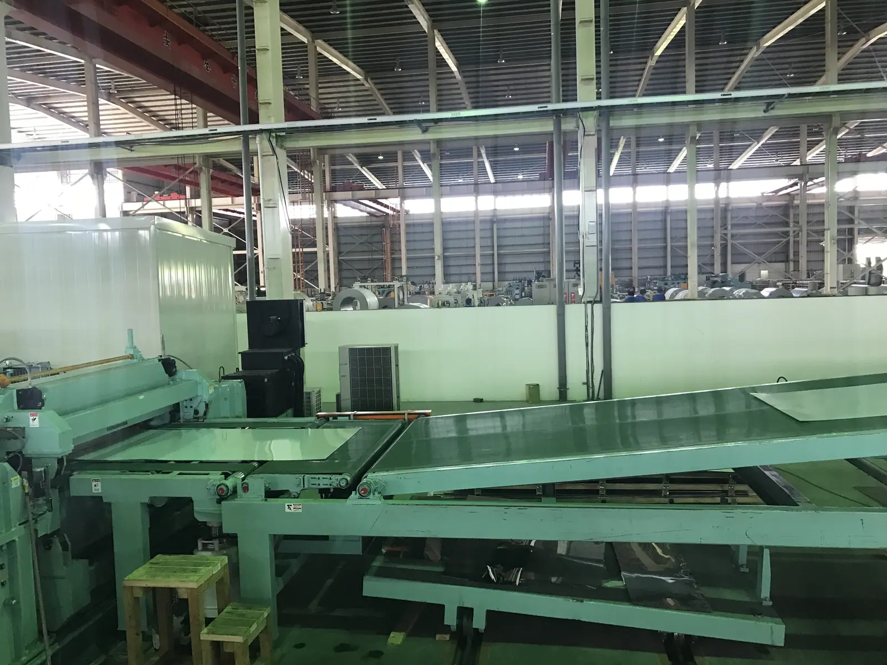
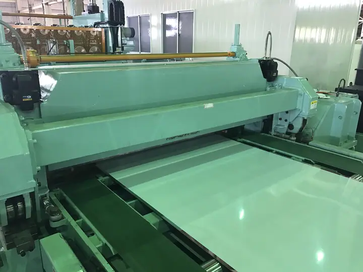
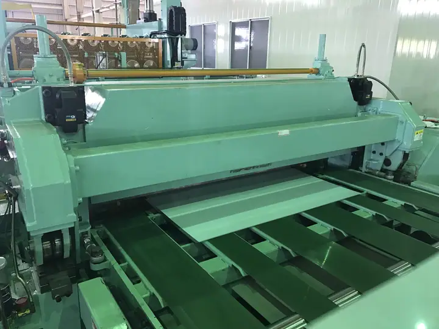
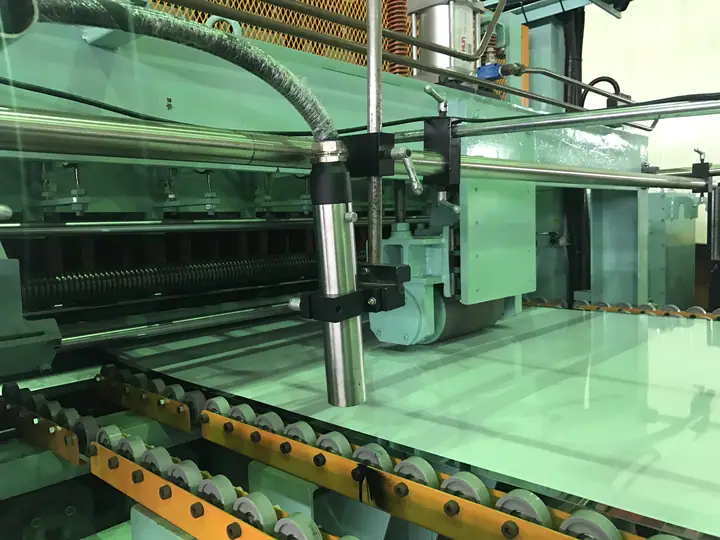
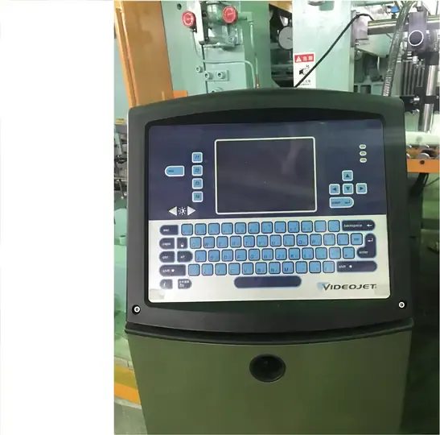
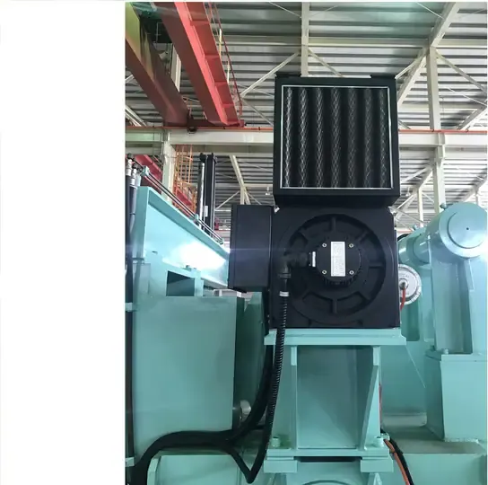

플라잉 시어(로터리 시어)
플라잉 시어(로터리 시어) 제어 시스템: 라인을 멈추지 않고 강판, 도금 강판, 퍼린을 절단합니다. 측장 롤이 폐루프로 길이를 측정하고, 고속 CG 컨트롤러가 나이프를 소재 속도에 동기시킵니다.
적용 대상
- 플라잉 컷 제어가 필요한 롤 포밍기, C/Z 퍼린 성형기 제조사
- 무정지 절단 라인을 운영하는 강판·도금 강판 공장
- 베트남 현지 기술 지원이 되는 플라잉 시어 컨트롤러가 필요한 신규 라인
견적에 필요한 자료
- 라인 속도(m/min)
- 소재, 두께, 폭
- 주로 쓰는 절단 길이, 현재 공차와 목표 공차
- 기존 컨트롤러, 모터, 드라이브(있는 경우)
- 시어가 가동 중인 사진 또는 영상
시스템 도입 후 달라지는 점
| 항목 | 흔한 현재 상황 | CMV 시스템 적용 시 |
|---|---|---|
| 속도 변화 시 길이 오차 | 라인 속도에 따라 달라짐 | 측장 롤 엔코더에 의한 폐루프 길이 측정 |
| 라인 속도 | 나이프 가속이 느려 제한됨 | 나이프 드럼에 고응답 서보 벡터 드라이브 적용 |
| 조정과 수리 | 원 제조사에 의존 | CMV 엔지니어가 베트남 현장에서 지원 |
공급 범위
- 길이 측정
- 측장 롤 엔코더, 폐루프
- 컨트롤러
- CG, 2 / 4 / 8축
- 나이프 드럼 모터
- SVMF 서보, 0.75–132 kW
- 드라이브
- VFI-CG80, 220 V급 2–25 HP, 440 V급 2–400 HP
- 제어반
- 제어반, PLC
- 두께, 폭, 속도
- 라인별로 확인하여 기술 제안서에 명시
거래 조건
- 현장 조사
- 공장 방문 또는 사진, 영상, 라인 자료로 검토
- 공사 기간, 정지 시간
- 견적서에 명시
- 보증
- 견적서와 계약서에 명시
- 예비 부품
- 베트남 CMV를 통해 공급
- 계약, 세금계산서
- CÔNG TY TNHH CHARGER MECHATRONIC(베트남 세금 코드 0319206171)과 계약

실제 라인











제어 기능
- 추종 제어
- 정척 절단 제어
- 위치 결정 제어
- 코일 외경 연산 제어
- 부하 분담 제어
- 동기 제어
- 루퍼 제어
- 장력 제어
- 속도 제어
- 저장 구간 제어
- 토크 제어
- 액위 제어
자주 묻는 질문
가동 중인 플라잉 시어를 통째로 교체해야 합니까?
꼭 그렇지는 않습니다. 기계부가 양호하면 CMV는 제어와 구동부만 교체합니다. 로터리 시어 개조 페이지를 참고하십시오.
어떤 소재에 사용합니까?
롤 포밍 라인과 언코일링 라인의 강판, 도금 강판, 퍼린입니다. 구체적인 수치는 라인별로 확인합니다.
CMV에 문의
업무 시간: 월요일–금요일(베트남 시간). 베트남어, 중국어, 영어로 상담 가능합니다.